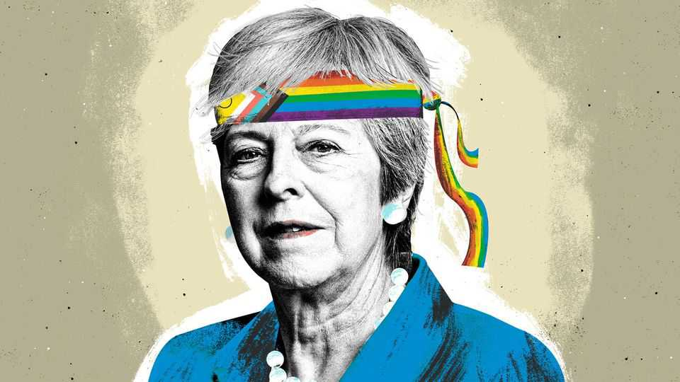

Theresa May: Britain’s first—and last—woke prime minister
That whooshing sound was the Overton window hurtling by
July 9th 2026

On July 13th 2016 Theresa May strode to a podium in Downing Street and launched an assault on the “burning injustices” of Britain. Under her government, young black men would no longer fear the police; women would no longer endure lower pay than men. Social concerns would trump economic ones. Their systemic causes would be eradicated. It was a hymn to identity politics. It was, in short, woke.
Mrs May—now Lady May—was Britain’s first and probably last woke prime minister. It is a strain to accept this, at first. The thought makes both her allies and enemies wince. The mp who in 2000 voted against the repeal of Section 28, which forbade the “promotion” (or rather acceptance) of homosexuality in schools? The authoritarian home secretary, rigidly in favour of the Conservatives’ attempts to reduce immigration at any cost? The prime minister who railed against “citizens of nowhere”? How can Mrs May, a creature of curtain-twitching suburban England, be woke?
If the idea seems absurd, it is because Britain has drifted so far from the ideas and ideologies that dominated the country barely a decade ago. The policies Mrs May pursued—from trans rights to hammering the police for anti-black racism to pursuing “net zero” and eliminating “modern slavery”—are now seen as excesses from a different era. Mrs May is Britain’s only woke prime minister in the same way that Richard Nixon—responsible for environmental reforms and affirmative action as well as the carpet bombing of Cambodia—is probably America’s last truly liberal president. Mrs May was right-wing and right-on. An iron fist wrapped in a Pride flag; Britannia in a rainbow lanyard. Mrs May was woke.
Consider the way she treated the police. During one speech at the Police Federation, the de facto trade union for coppers, she in effect labelled them racist for unfairly targeting young black men and misogynistic for calling a domestic-abuse victim a “slag”. “It is an attitude that betrays contempt for the public,” said Mrs May, the then home secretary. She had entered the stage to polite applause. She left it to silence.
A decade on, and such a speech by almost any politician would be impossible. The police are racist against black people? Britain in 2026 is a land where the police are seen on the right as, if anything, racist against white people. Nigel Farage, the leader of Reform UK, which tops the polls for now, has attacked the police for an “obsessive commitment to anti-white discrimination” in a 7,000-word screed decrying “two-tier” Britain. It is woke means, with group identity and systemic injustice shaping everything, for unwoke ends.
In her moral crusade against the mistreatment of British ethnic minorities, Mrs May in 2016 commissioned a “racial-disparity audit”, which would reveal the everyday inequities against ethnic minorities. “There isn’t anywhere to hide,” she said. “If these disparities cannot be explained, they must be changed.” Now prejudice against the majority is of utmost political concern. “Anti-white racism is embedded into the heart of the state,” wrote Mr Farage.
What Mrs May sees as her crowning achievement, her successors now see as a pain in the neck. The Modern Slavery Act was a world first, rolling various anti-exploitation laws into a single act. Mrs May shone a light on the miserable existence of people forced to work in brothels, nail bars or building sites and car washes. Now, in British politics, claims of “modern slavery” are painted by each major party as little more than a ruse to dodge deportation.
In Downing Street Mrs May was a staunch advocate of trans rights. She considered adopting self-ID, allowing trans people to change gender without the say-so of a doctor. At the time, her position was mainstream. Today such views leave her on the fringe of British politics. A decade on, and a vociferous backlash to Mrs May’s proposals has left Britain with a de facto “bathroom ban” for trans people. Front-rank politicians who once baldly declared that “trans women are women” now cower when it comes to the subject. Cynical they may be, but it is probably for their own good: Mrs May’s views would likely bar her from high office today.
When politicians rail against the excesses of woke in 2026, they are often railing against the May government. Sweeping changes were adopted unthinkingly. In one of Mrs May’s final acts in office, Britain bound itself to being “net zero” by 2050, the first big economy to do so. There was a quick 90-minute debate, marked by broad consensus—a sharp contrast with the Brexit rows that curtailed her tenure in Downing Street. Now “net zero” is a fundamental fracture, with even Labour split on it.
Social change is not a ratchet. The woke world over which Mrs May briefly ruled has collapsed. “Who would not want to be woke?” she asked in her 2023 memoir “The Abuse of Power: Confronting Injustice in Public Life”. Well, all her successors for a start. Boris Johnson’s government started a “war on woke”. Rishi Sunak promised to “take on this lefty woke culture”. Sir Keir Starmer shuddered at the accusation that he, a human-rights lawyer, was in any way woke.
Politics is downstream of culture. In office Mrs May reflected society; she did not shape it. The shibboleths of her era were accepted with little introspection. Perhaps progressivism provided an oasis of political calm compared with the hysterical rows about Brexit, which defined her premiership. Now society has shifted and Lady May cannot move with it. Out of office, prime ministers become frozen in time, stuck in the period they ruled. In the House of Lords Lady May appears only occasionally to defend her modern-slavery reforms or to despair at racial disparity in the Mental Health Act, little more than an ermine-clad ghost from an era that is now long gone. ■
Subscribers to The Economist can sign up to our Opinion newsletter, which brings together the best of our leaders, columns, guest essays and reader correspondence.